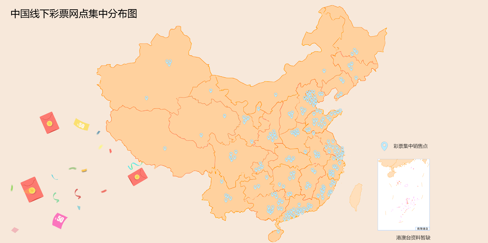
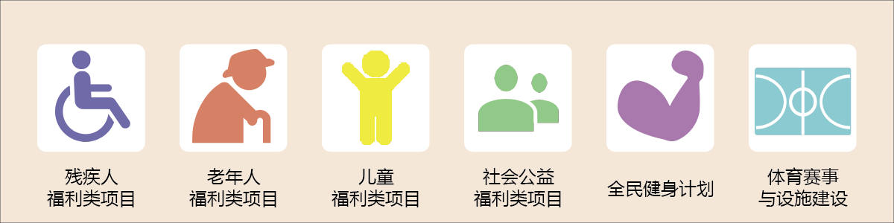

工作了一天的老张正走在回家的路上，今天和往常并没有什么不同。他照旧走进了离家不远的彩票点，照旧用着发皱零钱买了包烟和张彩票。
不单是老张，全中国2019年彩票前三季度销售额超3154亿人民币，约等于中国澳门地区2018年全年GDP总额，而去年全年彩票销售额更是突破五千亿元。
小小的一张彩票究竟又什么魅力，一夜暴富是否只是一场美梦？
工作了一天的老张正走在回家的路上，今天和往常并没有什么不同。他照旧走进了离家不远的彩票点，照旧用着发皱零钱买了包烟和张彩票。
不单是老张，全中国2019年彩票前三季度销售额超3154亿人民币，约等于中国澳门地区2018年全年GDP总额，而去年全年彩票销售额更是突破五千亿元。
小小的一张彩票究竟又什么魅力，一夜暴富是否只是一场美梦？

图为中国大陆彩票线下销售网点占有量Top20城市,数据来源于中国彩票中心。
图为2018年中国大陆彩票销售额Top20省份及对应省份同年GDP,数据来源于中国财政部2018年统计数据。
图为2018年广东省体育彩票与福利彩票各月份销售额,数据来源于中国财政部2018年数据。
从时间上看，以广东为例，年末（11、12月）是彩民们集中买彩票的时间，而到了年初后（1、2月）彩票店的吸引力就大幅下滑。目前主流的观点认为彩票的不同时段销售额与人们的可支配收入有相关性。
在年中时段（6-8月），正是人们手头最为拮据的时候，一是夏季对于人们来说意味着外出频率增加、娱乐活动增多，同时以中国人的储蓄意愿而言，开春后一直到入秋都是人们储蓄意愿较强的时段。而入冬以后随着年终奖的发放，人们的可支配收入会大幅度上升，同时近年来受到消费观念变动的影响，人们在年终是消费结构发生改变，更倾向于购买非必须品，消费金额的上涨同时也主观上影响了人们想要中彩票暴富的愿景。
到了第二年年初（1-2月）的春节时段，因为囤积年货与过年的关系，彩民们可以投彩的资金与时间都被节日压缩，所以会迎来一年中的最低峰。
除了季节时段，一些特殊事件也会大幅影响彩票的销售。2014年巴西世界杯时，也就是2014年6月，全国共销售彩票360.54亿元，比上年同比增加113.08亿元，增长45.7%。其中，体育彩票机构销售192.4亿元，同比增加87.27亿元，增长83%。2018年俄罗斯世界杯更是带动竞彩销量疯狂暴涨。世界杯期间，六、七月份体彩单月销量突破300多亿元，甚至接近400亿元。
所以中国民众参与世界杯的热情不只是电视机前的呐喊，还有彩票销售网点的一次次逗留。
“五有一缺”是彩民的鲜明特征。
“五有”是指有学历、有技术、有家庭、有结余、有梦想。有学历，本科学历的人占到80％；有技术，基本都是专业技术人员或IT行业者；有家庭，已婚者占到70％；有结余，参加调查者人均月收入大概5000块钱，开支大概在4000块，生活上还是有结余；有梦想，除了事业上有理想之外，很多人购彩想改变境遇，这个与他们的主观知觉有关系。
“一缺”是指自我感觉缺乏社会地位。绝大多数的人认为自己的社会地位处在社会的底层或者中下层，通过数据分析可以明显看出，其实这些人中，很大一部分已经不是在“他们自认为”的这个社会地位上，但他们从心理上是这么认为的，所以想通过买彩票一夜暴富来改变这种地位，可以说这实际上是社会上流行的金钱至上的风气在彩票行业上的一个折射，认为金钱可以改变一切，在有没有很好的、快速的办法的情况下，就把买彩票中大奖当成了一种安慰或者是办法。

回到开头，尽管老张一年到头大大小小的彩票买了不计其数，但终究是没有中过一次大奖。那么彩民们的钱都去了哪儿？
无论在国内还是国外，彩票都有其公益属性，本质上还是在促进社会公益事业发展。彩票公益金无疑是最能体现社会公益价值的部分。按规定用于社会福利、体育等社会公益事业。其中社会福利事业具体可分为：残疾人福利类项目、老年人福利类项目、儿童福利类项目、社会公益类项目。而体育彩票公益金主要用于落实《全民健身计划纲要》和《奥运争光计划纲要》等项目。
图为2018年全国体育与福利彩票销售获利各项社会事业支出金额,数据来源于中国财政部2018年数据。
在中国，彩票已经成为了许多人生活中的一部分。千千万万个老张每天都怀着一夜暴富的愿望，但等待他们的却是一场又一场的失落。
彩票让他们变得富有了吗？答案自然是否定的，但这却否定不了彩票存在的意义。至少在夜深人静的晚上，劳累了一天的老张握紧了手里的彩票，心里总归有个盼头。而在千里之外的困难家庭中，正在渴望着源于彩票的救助。
小组成员：李天昊、黄一哲、张紫玥
指导老师：吴小坤
华南理工大学新闻与传播学院
参考资料来源：民政局公开资料、国家统计局、中国福利彩票官网、中国体育彩票官网